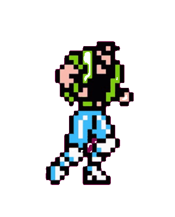
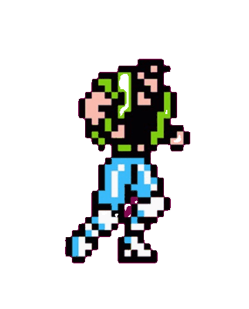

The Taj Mahal uses a riverside wetland filtration system to help clean and replenish the Yamuna’s water.

Agra’s city authorities run electric shuttles around the monument to cut traffic pollution.
A tree‑planting belt around the Taj Mahal grounds provides a habitat for native bird species.

Under India’s “Adopt a Heritage” scheme, corporations fund the upkeep, visitor infrastructure, and conservation of the Taj Mahal.
Solar panels on nearby buildings supply lighting for the Colosseum’s night‑time preservation work.

High‑precision 3D scanning and sensors detect early cracks, minimising restoration waste.

Electric tour vehicles guide visitors in eco‑friendly routes around the arena.

The Colosseum’s movable floor uses wood—harvested and treated with a low‑impact process—to avoid endangering valuable species.

The Eiffel Tower’s center uses 100% recycled paper and compostable cups in its cafés.
Wind turbines on the terraces generate 20% of the tower’s daytime electricity.
Smart‑glass reduces solar heat gain by 40%, lowering the tower’s carbon footprint.
A rooftop rainwater‑harvesting system collects runoff water to flush the Tower’s toilets, cutting its water demand by 50%.
 
